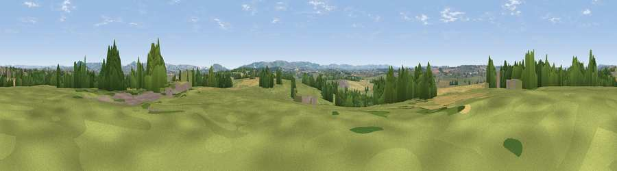

Viewpoint near Marnhull
#24989 in England · top 45% of its area beats it · near MarnhullWhere it is
The exact computed spot (ST 77476 17690). Click the marker for map links.
The view, rendered

A 360° render of this exact spot computed from the terrain model, tree cover and land cover — summer colours, afternoon light, calibrated against photographs of famous viewpoints. Real trees, hedges and buildings will differ in detail.
The panorama
Grey silhouette: terrain skyline in each direction (720 bearings, Earth curvature and refraction included). Dashed green: skyline with trees (+15 m) and buildings (+8 m) as obstacles. Blue strip: how far the ground is visible on each bearing.
Where the view opens
Wedge length = distance to the farthest visible ground on that bearing (vegetation-aware). Rings at 10, 25 and 50 km.
What fills the view
56% grassland · 27% cropland · 15% woodland · 3% built-up
Angular shares of the visible panorama (visual magnitude), not map area. Landscape diversity 0.46 (0–1 Shannon).
Key numbers
More beautiful places nearby
The staircase of upgrades: each row has a higher view potential than everything closer. Driving times are estimates from straight-line distance, calibrated against real road routing — check an actual route before setting out.
| Place | Direction | Drive | Score |
|---|---|---|---|
| Viewpoint near Lydlinch | WSW · 4 km | ~10 min | 51.2 |
| Copse Hill | SSE · 5 km | ~11 min | 55.3 |
| Viewpoint near Stour Row | NE · 7 km | ~15 min | 70.0 |
| Viewpoint near Child Okeford | SE · 8 km | ~17 min | 72.8 |
| Hambledon Hill | SE · 9 km | ~17 min | 74.6 |
| The Beacon | WNW · 15 km | ~27 min | 75.8 |
| Viewpoint near Berwick St John | ENE · 15 km | ~27 min | 78.2 |
| Eggardon Hill | SW · 33 km | ~50 min | 80.3 |
50.95819, -2.32207 · source: osm peak · position refined by local search. Computed location — check access rights before visiting.